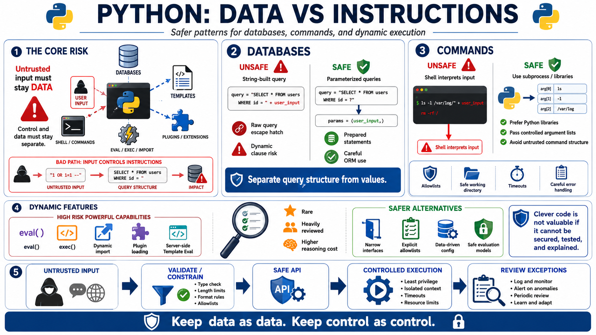

Unsafe Queries, Commands, and Dynamic Execution
Connecting to LMS... Progress: in progress

Narration
Python applications often connect user-controlled data to powerful interpreters: database engines, operating system shells, template engines, expression evaluators, and plugin systems. The mistake is not using these capabilities. The mistake is allowing untrusted or poorly constrained data to influence instructions rather than values. When code builds commands or queries as strings, it becomes harder to prove that data remains data and control remains control.
For databases, safer patterns include parameterized queries, prepared statements, and careful use of ORM features. An ORM can reduce risk, but it does not make every query pattern safe by default. Raw query escape hatches, dynamic filters, string-built clauses, and flexible search features still need review. The stable principle is to use APIs that separate query structure from data, then review any exception with extra care.
Command execution needs the same discipline. Many tasks are safer when handled by Python libraries instead of shelling out to operating system commands. When subprocess behavior is required, developers should understand the difference between passing controlled argument lists and invoking a shell that interprets a command line. Untrusted values should not be allowed to become command structure. Allowlists, constrained options, safe working directories, clear timeouts, and careful error handling are part of defensive design.
Dynamic execution features such as eval, exec, dynamic imports, plugin loading, and server-side template evaluation should be rare and heavily reviewed. They can be useful in constrained systems, but they increase the cost of reasoning about security and maintainability. If a feature needs dynamic behavior, prefer narrow interfaces, explicit allowlists, data-driven configuration, and safe evaluation models. Clever code is not valuable if the team cannot secure it, test it, and explain it later.